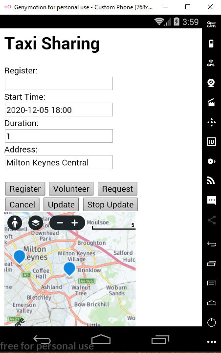

A Taxi Sharing App for users sharing a taxi to Walton Hall, Milton Keynes. The Graphical User Interface is structured in HTML with no style, the business logic uses JavaScript. The app uses a REST API to access a database coded in PHP and SQL and receives a response in JSON format to update the map. Postman was also used to explore the API.
The following screenshots show the simple app:
Shows the Presentation Layer in Genymotion Emulator when the App first loads up. A user registers with their name and then presses one of the buttons 'Volunteer' or 'Request' to share a Taxi. Each button is linked to a JavaScript function that implements the business logic associated with the button pressed.
A user has requested a Taxi for the time specified for the duration of 1 Hour to be picked up at Milton Keynes Central. On the Open Streep Map the jouney path is indicated by the markers. The Open Street Map API uses a REST service
